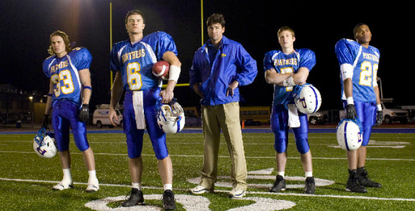

Matthew Aaron Hines
Life's a Garden, Dig it!
About Me:
Born and raised in Texas. Spent most of my life in the Austin area. I am currently engaged and am getting married in Round Rock on Febuary 18th to the love of my life.
I grew up around sports and played basketball into college where
I attended Southwestern University. The work I have most enjoyed has come from small family businesses. I first began working for a small business with my parents who exposed me to the intricate workings of small business management.
An ongoing passion of mine is seeking adventure. From riding my bicycle across the US, to climbing Kilimanjaro, to walking across Spain, the sense of adventure has taken me all across the world.
Why I Am Learning How to Code:
Four years ago I had the opportunity working with a programmer to develop software from the ground up. Seeing the project from the beginnging to end and that evolution sparked a curiosity in me to combine my love of small business with coding. The ability of our programmer to create our vision from scratch and make it a reality opened up my eyes to a career path I had never considered.
| Friday Night Lights | NFL Playoffs | Breaking Bad |
|---|---|---|
|  |
| Mumford & Sons | Judah & the Lion | David Ramirez |
|---|---|---|